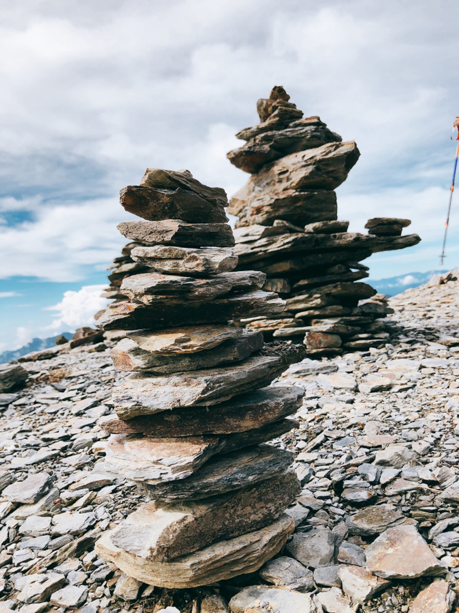

中央山脈山系
「奇萊南華」，是指奇萊南峰(3358公尺)與南華山(3184公尺)兩座百岳，雖有奇萊之名，但與一般人印象中險惡的奇萊完全不一樣，奇萊南峰無斷崖，亦無峭壁，為圓潤寬平的峰巒，是台灣最容易親近的百岳之一；從天池山莊往上走，可看到一整片箭竹草原，當日出照耀時，散發金黃色光澤，亦有黃金大草原之稱。
奇萊南華兩天一夜時程
(商業團)
D1
7：00 台北(高鐵)->台中(高鐵)
7：30 上接駁
10：10 屯原登山口
10：25 整裝完畢出發
12：00 雲海保線所4.5K(午餐)
13：10 出發
16：10 能高瀑布
16：25 天池山莊(有水源)
D2
4：30 起床吃早餐
5：30 天池山莊出發
8：20 奇萊南峰
10：10 南華山
11：10 天池山莊(大休午餐)
12：10 能高瀑布
14：50 雲海保線所4.5K
16：15 屯原登山口
路程與紀錄
D1
10：10 接駁車抵達了屯原登山口，下車開始整裝與拍照，離登山口不遠處就有一個崩壁，平坦舒適的林道，整路都是緩坡，除了三處崩壁要快速通過外，到天池山莊都很好走，是CP值很高的登山行程！
12：00 雲海保線所，來到這，領隊馬上煮起了冬瓜蒜頭雞湯，光聞香味就快讓我吃不下冷冰冰的飯糰，待領隊說可以享用時，大家馬上拿起杯碗排隊裝湯~在山上煮這麼香可以嗎！！！(跟商業團就是有這種好處~) 喝了快飛起來，超幸福!!後面還加了泡麵唷！
13：10 大休一個小時，吃飽喝足繼續出發！
13：40 6K大崩壁，常常因為大雨而坍方的崩壁，經過時可拍張照，但不要逗留，也別站在中間拍照，會有遇到落石的風險。
16：10 原名三疊瀑布，又稱能高瀑布，總落差200公尺，台灣著名的高海拔瀑布之一，到這裡就代表天池山莊在前方了！等回程再來拜訪瀑布吧！
16：25 天池山莊，第一次來時，被它的豪華震撼到，山裡面有蓋的如此漂亮的山屋，真令人佩服！因為我們走較快先到，領隊交代可以先找莊主問床位嘍！
17：30等待晚餐時間，天池山莊內滿滿的登山客~大部分人都包餐居多，也有自己開伙的帶食物來煮，吃完飯後還有莊主的自彈自唱，用宏亮的歌聲溫暖大家。
D2
4：30 起床吃早餐，飯後天已經很亮了，就準備集合出發，因為前一晚有下小雨，大家紛紛穿上雨褲，以防潮濕的箭竹弄濕身體！
一路上坡讓我氣喘吁吁，但看到展望後馬上又恢復元氣了。
7：00 到達天池，在這小休拍團體照20分鐘時間，繼續往南峰前進。
8：20 整路一望無際的大草原，緩緩坡度向上，終於到了第一個山頭也是此次行程的第一座百岳，奇萊南峰~~天氣爆炸好，山景超美好療癒！
 |
南峰旁邊的空地上，看到一個個疊了很高的疊石，覺得很有趣也跟著疊了一個(在未來某天聽了一個故事，原來這些疊石是為了思念人而慢慢堆出來的)。
|  |
9：00 離開奇萊南峰，開始往路程較短的南華山前進，準備踏上這次行程的第二個百岳。
10：00 南華山，不到一個小時的短短路程，CP值超高！
11：10 一路下坡衝回天池山莊，到了山屋接近中午，天池也有準備香噴噴的湯麵補充體力。
12：10 下山時順訪能高瀑布，有經過一定要來看一下！層層堆疊的瀑布真的超美！
14：50 4.5K雲海保線所。
16：15 登山口，還有心情拍照，我想是不太累啦！
謝謝這趟行程完美的天氣完美的人，期待下一次的山行會更精采！！